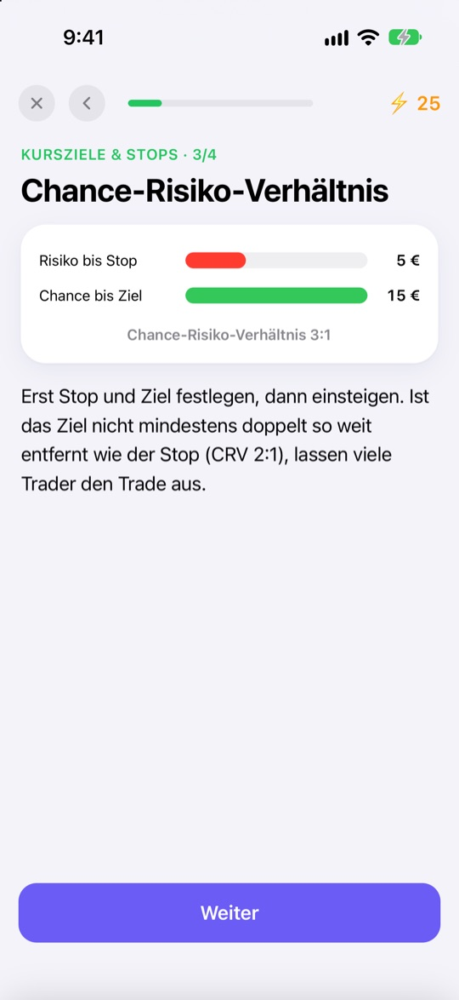

Trading-Grundlagen
CRV berechnen: Chance-Risiko-Verhältnis einfach erklärt
Vor jedem Trade stellen Profis zwei Fragen: Was kann ich verlieren, und was kann ich gewinnen? Das Chance-Risiko-Verhältnis setzt beides ins Verhältnis.

Viele Einsteiger fragen sich vor einem Trade nur, wie weit ein Kurs steigen könnte. Profis fragen zuerst, wie viel sie verlieren, wenn sie falsch liegen. Das Chance-Risiko-Verhältnis, kurz CRV, verbindet beides zu einer einzigen Zahl.
Was ist das Chance-Risiko-Verhältnis?
Das CRV vergleicht den möglichen Gewinn bis zum Kursziel mit dem möglichen Verlust bis zum Stop. Ein CRV von 2:1 bedeutet: Du willst doppelt so viel gewinnen, wie du im schlechtesten Fall verlierst.
So berechnest du das CRV
Die Formel ist einfach:
Ein Beispiel: Du steigst bei 50 € ein, dein Stop liegt bei 48 € und dein Kursziel bei 56 €. Die Chance beträgt 6 €, das Risiko 2 €. Das ergibt ein CRV von 6 ÷ 2 = 3:1.
| Einstieg | Stop | Ziel | Risiko | Chance | CRV |
|---|---|---|---|---|---|
| 50 € | 48 € | 52 € | 2 € | 2 € | 1:1 |
| 50 € | 48 € | 54 € | 2 € | 4 € | 2:1 |
| 50 € | 48 € | 56 € | 2 € | 6 € | 3:1 |
Warum viele Trader mindestens 2:1 verlangen
Je besser das CRV, desto seltener musst du richtig liegen. Die Trefferquote, ab der du vor Kosten nicht mehr verlierst, berechnet sich so: 1 ÷ (1 + CRV).
| CRV | Nötige Trefferquote vor Kosten |
|---|---|
| 1:1 | 50 % |
| 1,5:1 | 40 % |
| 2:1 | 33,3 % |
| 3:1 | 25 % |
Ein Rechenbeispiel: Zehn Trades mit einem CRV von 2:1, davon vier Treffer. Die vier Gewinne bringen je 2 Einheiten, zusammen 8. Die sechs Verluste kosten je 1 Einheit, zusammen 6. Unterm Strich bleiben 2 Einheiten Plus, obwohl du öfter falsch als richtig lagst. Gebühren und Spread schmälern das in der Praxis.
Wo der Stop hingehört
Der Stop gehört dorthin, wo deine Idee widerlegt ist, nicht dorthin, wo sich der Verlust gut anfühlt. Steigst du nach einem Ausbruch über einen Widerstand ein, liegt der Stop zum Beispiel knapp unter diesem Widerstand. Fällt der Kurs zurück, war der Ausbruch ein Fehlsignal.
Ein Stop, der nachträglich weiter weg verschoben wird, macht jedes CRV zunichte. Lege Stop und Ziel deshalb fest, bevor du einsteigst. Wie viele Aktien du dann kaufst, regelt die Positionsgröße.
Typische Fehler
- Ziele schönrechnen: Ein Ziel weit über dem nächsten Widerstand verbessert das CRV auf dem Papier, wird aber selten erreicht.
- Stop verschieben: Wer den Stop im Minus nach unten zieht, erhöht das Risiko und verschlechtert das CRV.
- Kosten und Lücken vergessen: Ordergebühren, Spread und Kurslücken können das tatsächliche Risiko vergrößern.
- Nur auf das CRV schauen: Ein CRV von 5:1 nützt wenig, wenn das Ziel fast nie erreicht wird. CRV und Trefferquote gehören zusammen.
So übst du das CRV ohne Risiko
Die Lektion „Kursziele & Stops“ in InQuestly erklärt Measured Move, Stop-Platzierung, CRV und Positionsgröße an Skizzen und Charts. Sie ist gratis. Im Chart-Training übst du anschließend, Situationen zu lesen, ohne echtes Geld einzusetzen. Den ganzen Weg vom ersten Chart bis zum Trading-Plan beschreibt der Artikel Trading lernen.
Häufige Fragen
Welches CRV ist gut?
Viele Trader verlangen mindestens 2:1. Ob das reicht, hängt von der Trefferquote ab: Mit 2:1 brauchst du rechnerisch gut 33 % Treffer, um vor Kosten nicht zu verlieren.
Wird das CRV vor oder nach dem Einstieg festgelegt?
Vorher. Erst Stop und Ziel bestimmen, dann prüfen, ob sich der Trade lohnt, und erst danach einsteigen.
Garantiert ein hohes CRV Gewinne?
Nein. Ein hohes CRV hilft nur, wenn das Ziel realistisch ist. Weit entfernte Ziele werden seltener erreicht, die Trefferquote sinkt.
Ist das CRV auch für langfristige Anleger wichtig?
Weniger direkt, weil langfristige Anleger meist ohne festes Kursziel arbeiten. Chance und Risiko vorher abzuwägen, hilft aber auch beim Investieren.
Dieser Artikel dient der Bildung und ist keine Anlageberatung. Beispiele sind vereinfacht und ohne Steuern dargestellt.